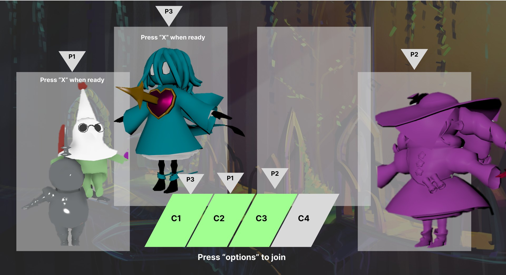
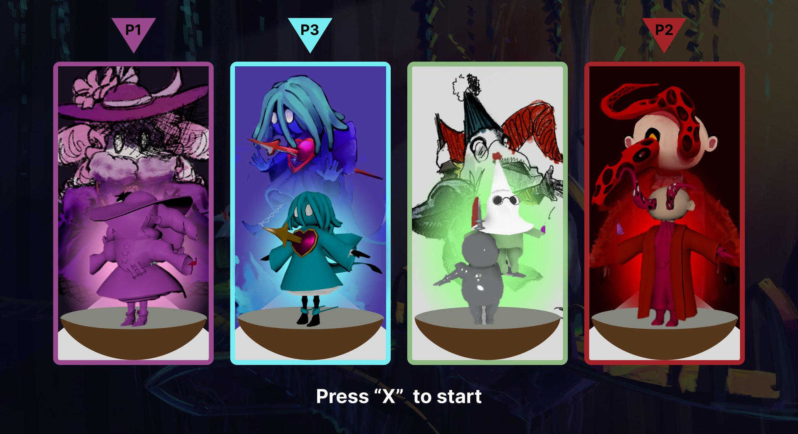
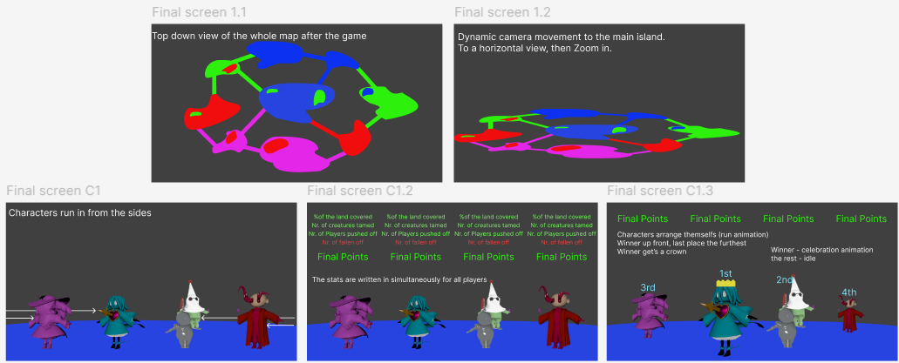

Enscherade: couch game UI for four players
A painting battle game for 2 to 4 players: you win by covering the most ground in your colour. Each character spreads colour differently and has its own ability, and every extra player adds a split screen. I designed the screens that get everyone into a match and the moment that crowns the winner.
Getting four people in
On a couch, nobody wants to read instructions. Players join by pressing Options on their controller, and the slots C1 to C4 at the bottom fill up so everyone can see who’s connected.
Each player gets a marker, P1 to P4, that stays with them through every screen. On character select, the marker and the card frame take the colour of the character, so you can find yourself on a shared screen at a glance. When everyone has pressed X, the match starts.


Ending the match
The end of a match should feel like a moment, not a scoreboard. I storyboarded it as a short sequence: the camera shows the whole map from above, painted in each player’s colour, then swoops down to the main island.
The characters run in from the sides, their stats appear at the same time (land covered, creatures tamed, players pushed off and falls), and then they arrange themselves by rank. The winner stands in front with a crown and a celebration animation.
